Migrant Compass.
Real-time guidance for migrants
- Problem-solving
- Teamwork

At the IDEA Lab @ Fletcher, our team built Migrant Compass, a mobile platform that gives migrants safety updates, guidance and real-time resources.
What is the IDEA Lab?
The IDEA Lab @ Fletcher is a student-run initiative at Tufts University’s Fletcher School. Interdisciplinary student teams take on global problems, from refugee data security to water quality.
Our team of researchers, engineers and developers took on migrant navigation.
Migrants make high-stakes decisions with patchy signal, rumors on social media and no way to know who to trust.
give migrants verified, location-based help that still works offline and keeps them safe?
Location-based, verified information on food, shelter and aid that also works offline.
A Figma prototype shaped by a persona, task analysis and the whole team’s ideas.
Who we designed for
For migrants traveling alone or with families, and the aid workers and volunteers who support them.
María, 30
Single mother of two (ages 5 & 8)
“Every day is uncertain, but I can’t stop. My kids depend on me.”
- Journey
- From Puebla, traveling through Mexico toward Tijuana
- Tech
- Android; WhatsApp, Facebook, Google Maps
- Personality
- Protective · Resilient · Hopeful · Pragmatic
Needs
- Real-time updates on shelters, checkpoints, aid
- Offline maps and emergency contacts
- Verified legal info on rights and asylum
- Simple Spanish guidance, icons, voice
Frustrations
- Misinformation on social media
- Limited internet and charging
- Fear of scams
- Keeping her kids safe
Problem → solution
Every feature started as a specific problem María would face on the road.
Problem
How we solved it
Limited internet and charging on the road
Offline access for low-connectivity areas
Misinformation spreads on social media
Verified sources and protected community information
Conditions change fast and safety is uncertain
Real-time risk alerts and route-safety scoring
Travelers speak many different languages
Language choice at first launch: English, Español, العربية, Français, 中文, Português
Sharing location can put people at risk
Choose live tracking or manual input; location stays encrypted and is never shared without consent
Users have different abilities and literacy levels
Adjustable text size, high contrast, screen reader and voice navigation
Task analysis
- 01Choose languageFirst step, before anything else
- 02Location accessLive tracking, last known or manual
- 03ConsentExplicit choice before sharing
- 04ProfileOptional, for tailored help
- 05ResourcesWater, food, legal aid, medicine, shelter, news, hazards
Mapping the flow first showed where privacy decisions had to happen, so consent comes before any data is shared.
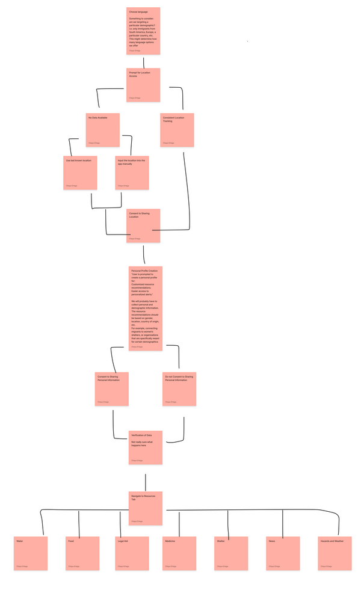
Mood board, built together
Everyone on the team pitched in. Each person explored one area and brought options with notes, then we compared them and agreed on one direction.
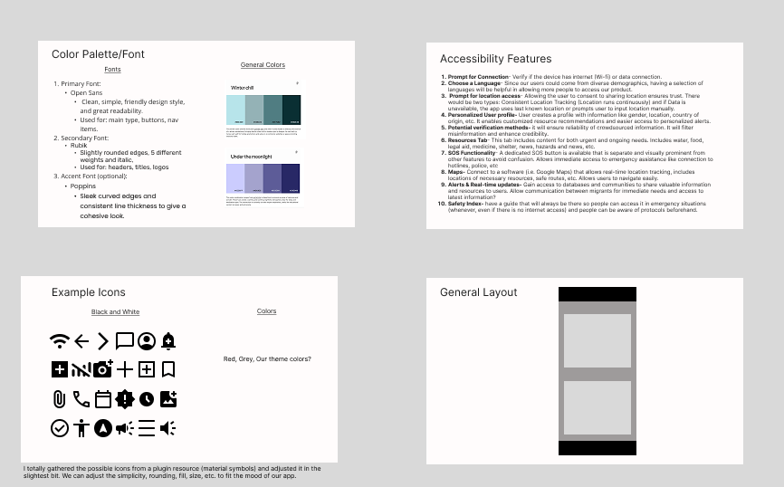
- Color & typePalettes like “Winter chill” and “Under the moonlight”; Open Sans, Rubik and Poppins
- AccessibilityTen ideas, from language choice and an SOS button to offline safety guides
- IconsSimple, universal symbols gathered and adjusted to fit the app
- LayoutA clear, card-based screen structure
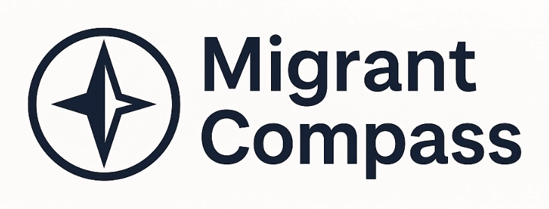
Key features
Real-time risk alerts
Notifies migrants and aid workers of nearby risks so they can respond proactively.
Route-safety scoring
AI-powered scores to help choose safer routes.
Offline access
Works in areas with limited connectivity.
Final product
Prototype built in Figma, bringing together everyone’s ideas on color, layout and accessibility.
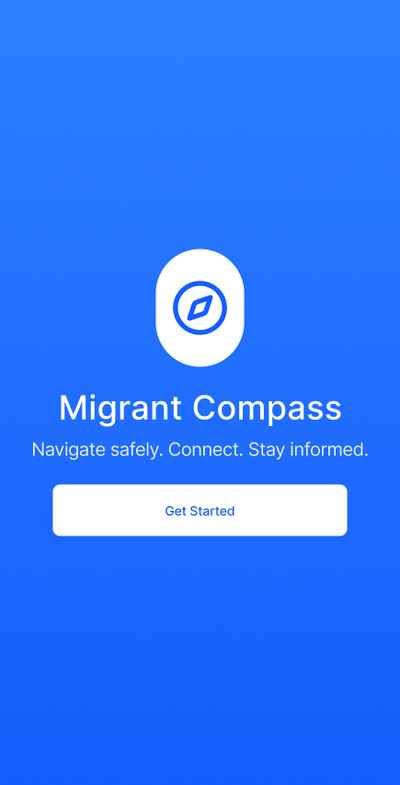
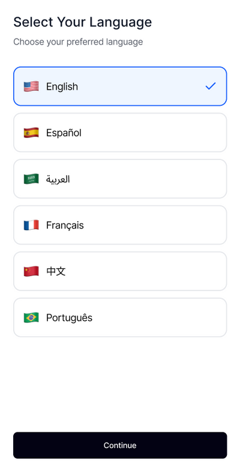
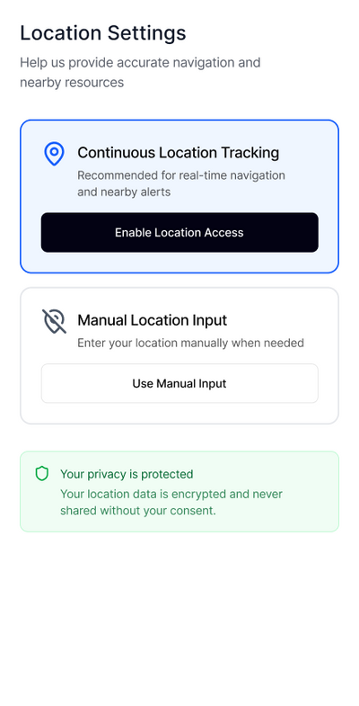
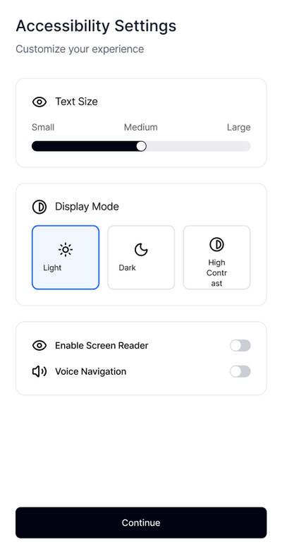
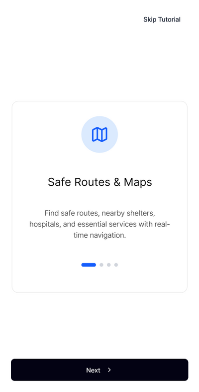
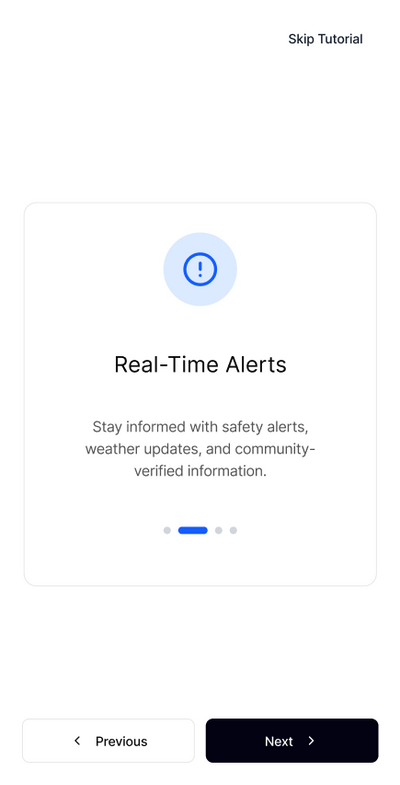
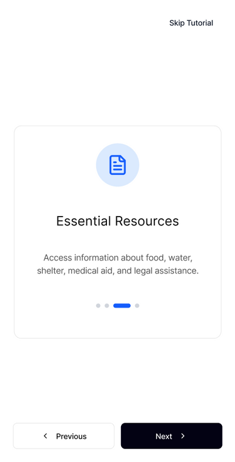
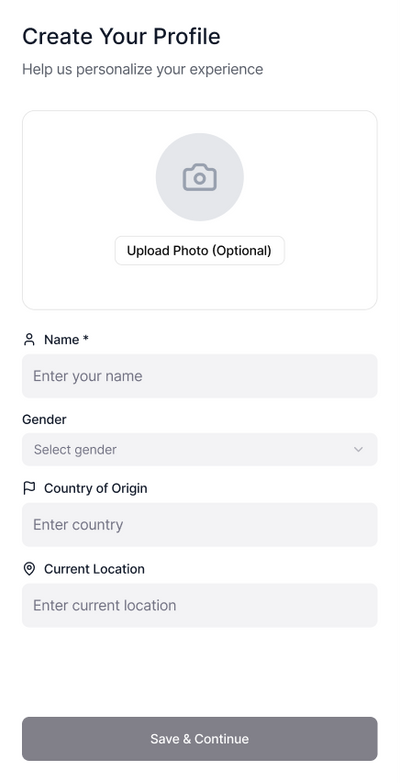
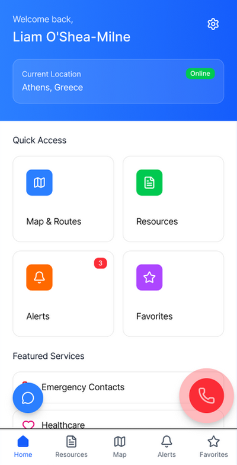
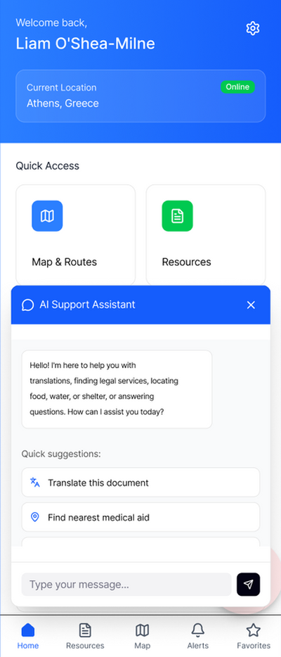
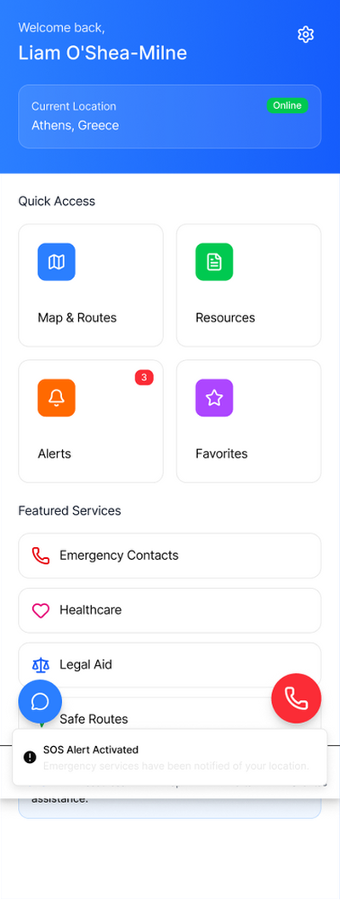
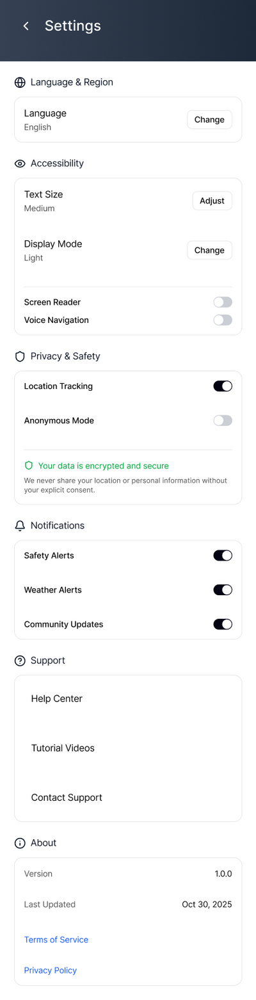
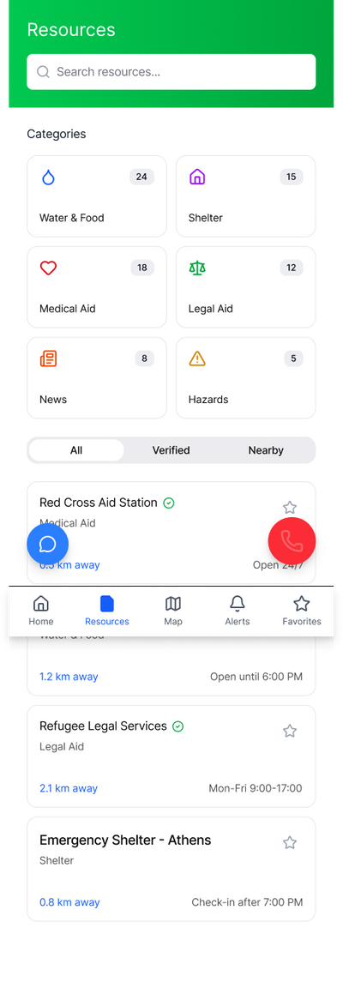
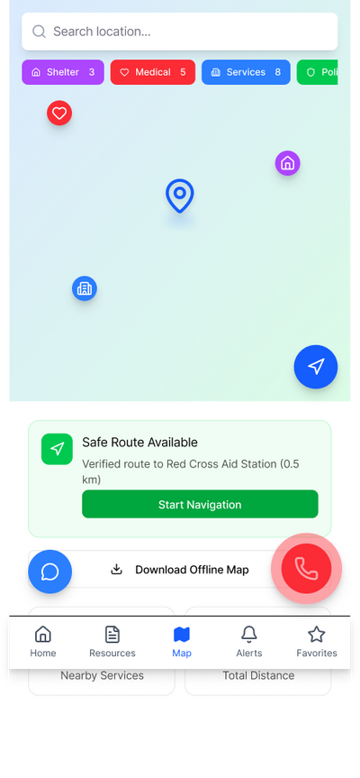
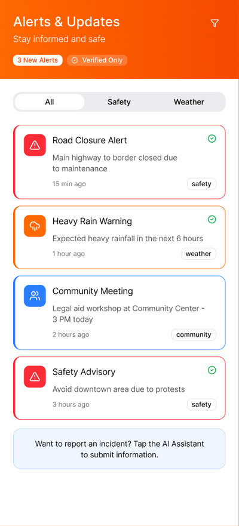
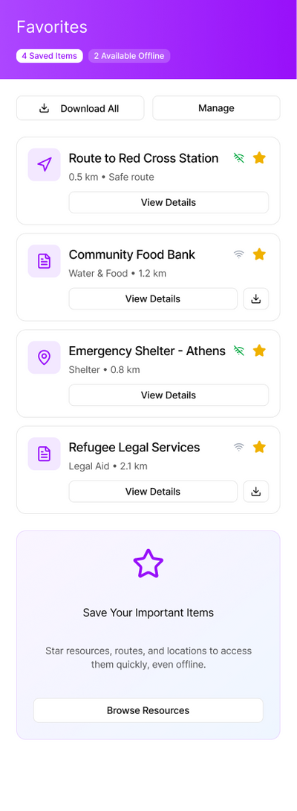
Scroll sideways →
Next stepsDeeper research into real locations and services, and partnering with nonprofits to validate resources.